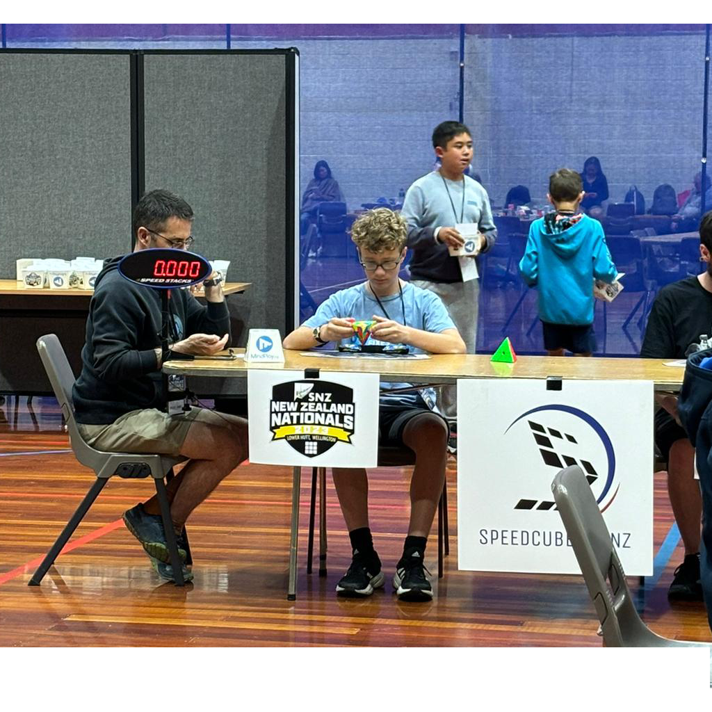

Speedcubing (also known as "cubing" or "speedsolving") is the activity of competitively solving Rubik's Cube-like puzzles in the shortest possible time. Speedcubing involves a combination of pattern recognition, mental recall skills, physical dexterity (fine motor skills) and muscle memory.
Global speedcubing is governed by the World Cube Association (WCA).
The current world record for a single solve of a 3x3x3 cube is 3.08 seconds and is held by China's Yiheng Wang (王艺衡).
I started cubing in 2020, when I got a cube as a birthday present. I tried to solve the cube without any form of instructions and after being unable to do so, promptly gave up. The cube remaind untouched on my shelf for the next year, when, during New Zealand's 2021 COVID-19 lockdown, I decided to learn to solve it.
Over the course of a week, I learnt to solve it, and while I knew about speedcubing, I wasn't reall interested in it, until 2022, when people I knew started speedcubing, and I decided to join in on the hype. I speedcubed casually for just over a year, when I saw that there was a competition in my area, and I decided to register.

Solving a Pyraminx at New Zealand Nationals 2023!
Since then, I've co-founded a speedcubing club at my high school, completed over 200 solves in competition and volunteered with Speedcubing New Zealand to create social media and livestream content. I also created and maintain a spreadsheet of speedcubing competition venues in my hometown